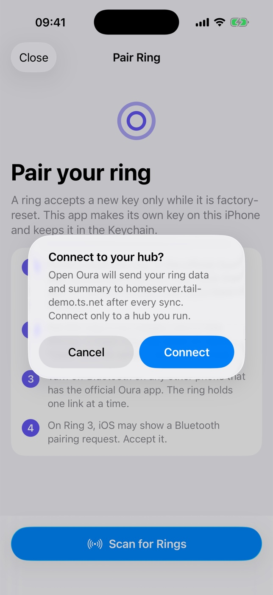

From a clean Mac to your ring on your iPhone.
Four parts, in order. The iPhone app is the only required part. The hub and the agent add a backup and remote access. Plan about 30 minutes, most of it for the first build and the ring reset.
What you need
The iPhone app is the only required part. The hub and the agent add a backup and remote access.
For the iPhone app
- A Mac with Xcode 26 or newer
- An iPhone with iOS 17 or newer, and its cable
- An Apple ID. A free one works; the app then runs for 7 days per install.
For the ring
- An Oura Ring 3, 4, or 5
- Its charger
- About 15 minutes for the reset and the first sync
For the hub (optional)
- A computer that stays on: a Linux server, a Steam Deck, or a Mac
- Docker or podman on it
- A free Tailscale account, on the server and the iPhone
The official Oura app and Open Oura cannot share one ring. The setup resets the ring, so sync it in the official app one last time before you start.
Four parts, in this order
Install the app
One script builds the app and puts it on your iPhone.
Prepare the iPhone and Xcode
- On the iPhone: Settings → Privacy & Security → Developer Mode → on. The phone restarts.
- In Xcode: Settings → Accounts → add your Apple ID.
- Connect the iPhone with the cable, unlock it, and tap Trust.
Run the install script
The script installs
xcodegenand Rust when they are missing, builds the app, finds your Apple team and your iPhone, then installs and opens the app.git clone https://github.com/KenWuqianghao/open_health.git cd open_health ./apps/ios/install.sh --check # checks the tools, the team, and the iPhone ./apps/ios/install.sh
The first build takes about 10 minutes. With two iPhones connected, pick one:
DEVICE="Ana's iPhone" ./apps/ios/install.sh.Trust the app on the iPhone
iOS blocks the first launch. Open Settings → General → VPN & Device Management, tap your Apple ID, and tap Trust. Then open Open Oura.
Also turn on Settings → General → Background App Refresh for Open Oura.
Free the ring and pair it
A ring accepts a new key only after a factory reset.
Remove the official app
Delete the official Oura app from the iPhone. Then open Settings → Bluetooth. If the ring is under “My Devices”, tap its info button and tap Forget This Device. An old pairing makes every connection fail.
Reset the ring on its charger
This works on the Gen3 and Ring 4 dock, with no button. Take the ring off the charger, put it back, and wait about 2 seconds. Then flip the charger, with the ring on it, until each light shows:
Upside down until blueRight side up until redUpside down until purpleRight side up until yellowYellow means that the reset started. After a few minutes the light blinks blue: the reset is done. Do not set the ring up in the official app again. That installs Oura's key and locks Open Oura out.
Pair in Open Oura
Put the ring on its charger next to the iPhone. In Open Oura, tap Scan for Rings, tap your ring, and tap Pair. The app makes a key, keeps it in the Keychain, and sends it to the ring. Keep the app open until the first sync ends.
A Ring 3 drops the link once, about 2 seconds after it gets the key. The app connects again and finishes by itself.
Optional: write to Apple Health
Tap the profile icon → Apple Health → Write ring data to Apple Health → Turn On All → Allow. The app writes measured data only: sleep, heart rate, HRV, breathing rate, blood oxygen, steps, and energy.
Run your hub
Optional. A server that keeps a full copy of your data and serves it to your agent.
Put the server and the iPhone on one tailnet
Install Tailscale on the server and on the iPhone, and sign in to the same account on both. Tailscale encrypts the traffic, and the hub needs no open port.
Run the install script on the server
You need Docker or podman. The script makes a secret token, builds the hub, runs it as a service that starts again after a reboot, and prints the addresses.
git clone https://github.com/KenWuqianghao/oura-hub.git cd oura-hub ./deploy/install.sh # private: your tailnet only ./deploy/install.sh --public # or: also a public https:// address (Tailscale Funnel)
Use
--publiconly when a hosted agent (claude.ai, Claude Desktop connectors) must reach the hub. Run the script again to update. It keeps the token and the data in~/oura-hub-data.oura-hub is a private repository today. Ask the owner for access before you clone it.
Connect the iPhone with one scan
Open the Sign in link that the script printed. It opens the hub's Connect page. Point the iPhone Camera at the QR code, tap Open in Open Oura, then tap Connect. The app asks first, so a strange link cannot redirect your data.

The hub's Connect page. The token stays hidden until you tap Show token. 
The app asks before it sends data. From then on, the app sends the new ring data after each sync. To add your Apple Watch, turn on Settings → Health hub → Include Apple Health data.
Connect your agent
Optional. Your agent reads the hub over MCP.
Add the hub to your agent
Copy the MCP address from the Connect page. Claude Code:
claude mcp add --transport http health http://<server>.<tailnet>.ts.net:8787/mcp/<token>Cursor and other clients take an
mcpServersentry. The Connect page shows it with a copy button. For Claude Desktop or claude.ai, run the hub with--public, then open Settings → Connectors → Add custom connector and paste thehttps://MCP address.Ask
Try: “Call get_status_now and plan my day.” The agent gets last night's sleep, HRV and resting heart rate against your baseline, today's activity, and the age of the data. The tools:
get_status_nowget_sleepget_trendsget_activityget_watchget_health_samples
When something does not work
| What you see | What to do |
|---|---|
| “No iPhone found” from the install script | Connect the cable, unlock the phone, and tap Trust. Turn on Developer Mode. Run ./apps/ios/install.sh --check again. |
| “No Apple team found” | Open Xcode → Settings → Accounts and add your Apple ID. Or set TEAM_ID=ABCDE12345. |
| The app does not open after a week | A free Apple ID install stops after 7 days. Run ./apps/ios/install.sh again. Your data stays on the phone. |
| “Peer removed pairing information” | The iPhone still has the old pairing. Settings → Bluetooth → the ring → Forget This Device. |
| “Reset needed” | The ring has another key. Reset the ring on its charger again. |
| “No ring found” or a timeout | Put the ring on its charger next to the iPhone. The ring's radio is weak. |
| The Connect page says “This is the server's own address” | Open the page at the address that the phone uses, for example http://server.tailnet.ts.net:8787, or type that address into the field. |
| The iPhone cannot reach the hub | Turn on Tailscale on the iPhone. The app accepts plain http:// only for *.ts.net names; use https:// for any other name. |
| The hub does not answer after a reboot | Run ./deploy/install.sh again. Read the logs with docker logs oura-hub or journalctl --user -u oura-hub. |
Where your data goes
Bluetooth only. The key is made on the iPhone and kept in its Keychain. No Oura account, no Oura server.
Only when you connect a hub. The data goes to your server with your token, inside your tailnet or over HTTPS.
Only to agents that have your token. The token is the key to your data: keep it secret. To change it, delete ~/.config/oura-hub.env and run the install script again.
Sleep stages, cardiovascular age, and workout detection use Oura's own on-device models. They are Oura's property and are not in these repositories. Without them the app still syncs and shows heart rate, HRV, blood oxygen, steps, energy, and time in bed. The iOS guide explains how to add them from your own copy of the official app.